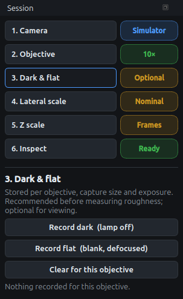
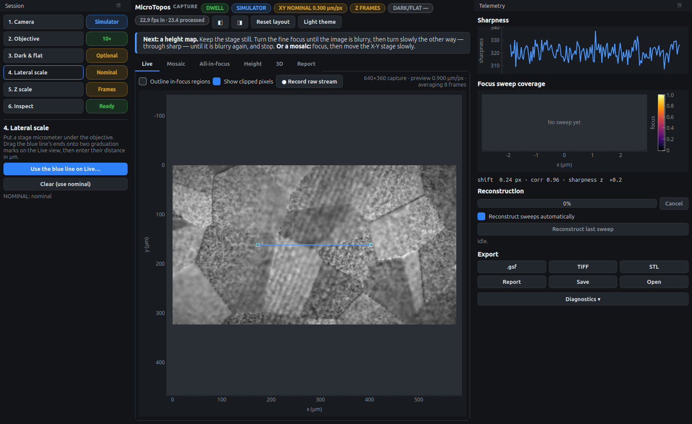
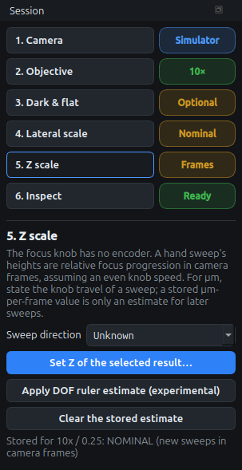

Calibration for real units
Out of the box, MicroTopos measures lateral lengths with the objective’s nominal scale and heights in focus frames. The checklist shows this with yellow chips (Nominal, Frames). Three calibrations turn them into real units. Each is stored per objective, so you do it once.
Before you start, make sure step 2 lists the objectives that are really on your nosepiece (Edit objectives…, see the manual). Calibrations are stored under the objective’s name, so set up the list first; renaming an objective later takes its calibration along.
Dark and flat frames (step 3, optional)
Uneven illumination and sensor offset show up as fake height and roughness gradients. Correcting them is recommended before measuring roughness:
- Record dark (lamp off)
-
block the light completely and click. 24 frames are averaged; keep still.
- Record flat (blank, defocused)
-
put a featureless, highly reflective area under the objective, such as a mirror or a polished blank, defocus it so no texture is visible, and click.
Both are stored per objective, capture size and exposure. Change any of these and the correction switches off until you record again for the new setting. The header chip DARK/FLAT shows the state.
Lateral scale (step 4)
You need a stage micrometer: a slide with a ruled scale, typically 1 mm in 100 divisions of 10 µm.

-
Put the micrometer under the objective and focus on the ruling.
-
Open step 4. A blue line appears on the Live view.
-
Drag the line’s two ends onto two graduation marks as far apart as the field allows. A longer interval gives a smaller relative error.
-
Click Use the blue line on Live… and enter the interval’s true length in µm.

The chip turns green and every length, area and µm axis now uses the calibrated scale. The scale is stored for full resolution and converted automatically for the other capture size, which has the same field of view.
Repeat this for every objective. The nominal scale is the nameplate magnification divided into an assumed 3 µm sensor pixel, but neither the camera’s real pixel pitch nor the magnification of any relay lens in the camera adapter is known. Even with an infinity-corrected objective and a 1× tube, the true scale can differ from the nominal one by a large factor, and only a stage micrometer measures it.
|
Tip
|
Place the line along the ruling as precisely as you can: the scale comes straight from its length in pixels. Zoom with the mouse wheel on the Live view to place the ends more accurately. |
Z scale (step 5)
The fine-focus knob has no encoder, so the program cannot know how far, or which way, the focal plane moved between frames. A hand sweep’s heights are therefore relative focus progression: the number of camera frames of knob movement, assuming an even speed while the knob turns. Two things turn them into signed micrometres, and both belong to one particular sweep:

- Sweep direction
-
which way the focal plane moved during the sweep: Up (toward the objective) or Down. With Unknown the relief may be upside down, and the result says so. Set it here once if you always turn the knob the same way; it is used for new sweeps.
- Set Z of the selected result…
-
Most fine-focus knobs carry a scale, often 1 or 2 µm per division. Note the reading at the start and end of a sweep. Then select that sweep’s result and enter the travel in µm and the direction. Only that result becomes CALIBRATED. The spacing comes from the camera’s own frame numbers, so thinning a long sweep or dropping frames under load does not change the scale. Pauses add no travel.
- Keep as an estimate
-
The same dialog can store the µm-per-frame value for later sweeps with that objective. Those sweeps are labelled ESTIMATED, not calibrated, because a different knob speed gives a different scale.
- Apply DOF ruler estimate (experimental)
-
Estimates µm per frame by comparing the measured width of the focus curves with the objective’s theoretical depth of field. It needs no knob scale but is only indicative: in simulation it was off by −34 % to +13 %. It is stored as an ESTIMATED scale, never as a calibration.
- Clear the stored estimate
-
new sweeps go back to relative focus-frame units.
|
Note
|
A calibration always goes to the objective the sweep was made with, even if you have switched objectives since. |
What the chips mean
| Chip | Meaning |
|---|---|
Nominal (yellow) |
lateral scale from the objective’s nominal magnification; lengths are indicative |
Calibrated (green) |
lateral scale from your stage micrometer, or Z stated for that sweep |
Estimate (yellow) |
a stored Z scale carried over to new sweeps (same knob speed assumed) or the DOF ruler |
Frames (yellow) |
heights in relative focus-frame units, not µm |
Optional / Partial / Done |
dark/flat: none, one of the two, or both recorded for the current objective, capture size and exposure |
Calibrations live in a calibration.json file in the program’s data folder, so they survive updates. The simulator never writes to it.